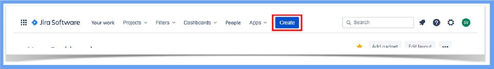

Como sugestão, configure a opção de leitura de caracteres e de pontuação de seu leitor de tela para o grau máximo de leitura, a fim de que os códigos disponibilizados neste material sejam lidos corretamente. No caso do NVDA (NonVisual Desktop Access), para localizar a opção Grau de pontuação/símbolos, acesse Preferências – Configurações – Fala. Altere o padrão Pouco para Tudo. Dessa forma, o leitor passará a ler os segmentos de código em sua totalidade.
Como você já sabe, por meio dos testes é possível reduzir a probabilidade de defeitos não descobertos permanecerem no software. Para que esses defeitos sejam encontrados de forma antecipada, as atividades de testes devem iniciar o mais cedo possível no ciclo de vida de desenvolvimento de software. Além disso, para a realização de testes, existem ferramentas específicas para os tipos de softwares/sistemas e contextos. Por meio dessas ferramentas, os testes são executados, os resultados são reportados e as comparações com testes anteriores são realizadas, podendo serem executados os testes repetidamente em qualquer horário do dia.
A seguir, você verá o que são ferramentas de bugtrackers e o que são ferramentas de automação.
As ferramentas de bugtrackers são de extrema importância para os testes. Serão abordados, aqui, o conceito de bugtracker e as ferramentas que são utilizadas para essa finalidade.
Você sabe o que são bugtrackers?
Eles têm como finalidade auxiliar a equipe de teste e de desenvolvedores a manter o histórico de todos os bugs que ocorreram no software. É nesse tipo de ferramenta que todos os dados referentes aos bugs encontrados são colocados. É um meio formal de sinalizar aos desenvolvedores que os bugs existem. Ocorre da seguinte forma: os bugs encontrados são cadastrados na ferramenta, para que, a partir disso, as equipes possam gerenciá-los.
A automação de testes está em expansão e, diferente do que os leigos acreditam, não é um processo de testes em si, mas, sim, parte de um processo maior. A implantação de automação geralmente falha quando os testes são imaturos e as responsabilidades não são bem definidas, até mesmo por não terem profissionais suficientemente qualificados ou, ainda, por optarem por ferramentas sem ter a maturidade suficiente para o processo de testes.
O objetivo da automação de testes é a redução do envolvimento humano em atividades repetitivas e manuais, e o grande benefício em automatizar os testes está em aumentar a amplitude e a profundidade da cobertura de testes a serem realizados.
Antes da escolha de uma ferramenta de testes, tanto automatizados quanto manuais, deve-se levar em consideração a criação de uma prova de conceito. Além disso, deve-se ter certeza de que não ocorrem erros críticos e utilizar sempre a versão mais atualizada da ferramenta, realizando teste de regressão. Outros fatores muito importantes são o dimensionamento e a infraestrutura adequados, pois as ferramentas necessitam de computadores com alto desempenho, processadores rápidos e memória grande, os quais devem ser exclusivos para a automação de testes.
Lembrem-se de que a automação não substitui os testes manuais. Ela deve ser um adicional para agregar valor.
Agora, serão apresentadas algumas das ferramentas mais utilizadas em testes, tanto manuais quanto automatizados, ferramentas comerciais e gratuitas.
Para testes automatizados relacionados a aplicações web pelo browser, há a ferramenta Selenium, utilizada para teste de aceitação, teste funcional, teste de performance/desempenho, teste de carga, teste de estresse, teste regressivo, desenvolvimento orientado a testes e desenvolvimento orientado a comportamento. É uma ferramenta gratuita e que fornece recursos de reprodução de gravação. Várias linguagens de programação podem ser escritas por testadores, por exemplo, JavaScript, PHP (hypertext preprocessor, ou pré-processador de hipertexto), Python, Ruby, Java, Perl, Groovy e C#.
O download da ferramenta pode ser realizado no site da Selenium (o qual você encontrar digitando “Selenium” no seu buscador), na aba Download. Já a documentação pode ser encontrada no mesmo site, clicando em Documentação – Diretrizes – Tipos de teste.
A ferramenta é uma extensão do Firefox e depende do browser para funcionar. Além disso, também existe disponível o núcleo da Selenium para que seja executado independentemente de plataforma e do Firefox, no qual é disponibilizado somente o JSFTR (JavaScript Functional Test Runner).
Após a instalação do Firefox, o próximo passo é fazer o download do Selenium IDE (integrated development environment). Para realizar o download da extensão, basta clicar em Extensões no navegador (ícone em formato de uma peça de quebra-cabeça) e digitar “Selenium” no campo Encontrar mais extensões, conforme apresentado na figura 1. Como resultado, será exibida uma tela com as extensões pertinentes ao que foi digitado, conforme apresentado na figura 2.
Figura 1 – Exemplo de como encontrar a extensão Selenium IDE no gerenciador de extensões do navegador Firefox
Fonte: Senac EAD (2023)
Imagem colorida do navegador Firefox, onde consta o ícone em formato de peça de quebra-cabeça, que deverá ser clicado para abrir extensões existentes. Além disso, também há o campo digitável, onde deverá ser inserido o nome da extensão desejada, que, neste caso, é Selenium.
Figura 2 – Extensão Selenium IDE no gerenciador de extensões do navegador Firefox
Fonte: Senac EAD (2023)
Imagem colorida do navegador Firefox, onde consta o resultado da busca, trazendo a extensão Selenium IDE para ser realizado o download.
A extensão será apresentada para ser realizado o download conforme apresentado na figura 3, bastando clicar em Adicionar ao Firefox.
Figura 3 – Extensão Selenium IDE no gerenciador de extensões do navegador Firefox
Fonte: Firefox Browser (2022)
Imagem colorida do navegador Firefox, onde consta o resultado da busca, trazendo a extensão Selenium IDE para ser realizado o download.
Em seguida, é necessário acessar a extensão por meio do ícone em formato de uma peça de quebra-cabeça e selecionar o que deseja fazer ao executá-la. Assim que estiver instalada, a extensão Selenium IDE está pronta para ser utilizada, assim como é demonstrado na figura 4. Ao selecionar essa opção, será visualizada a interface de configuração dos testes do Selenium IDE, onde é possível optar por gravar um novo teste de um novo projeto, abrir um projeto existente, criar um novo projeto ou simplesmente fechar a extensão.
Figura 4 – Exemplo da ferramenta Selenium IDE após clicar para a sua execução
Fonte: Senac EAD (2023)
Imagem com fundo cinza, onde é mostrado um menu inicial da ferramenta, aguardando que o usuário faça uma escolha em relação aos testes.
O zipBoard é uma ferramenta de rastreamento de bugs e feedback visual que permite aos desenvolvedores web trabalharem de maneira colaborativa em seus produtos e projetos, sejam eles web apps, sejam sites, entre outros. Essa ferramenta pode ser utilizada durante a criação de novos sites, e-commerce, ou ainda para melhorias que sejam pertinentes a produtos já existentes, de forma que auxilie no gerenciamento de tarefas. É uma ferramenta gratuita para utilizar durante 15 dias. Após esse período, torna-se paga.
Algumas de suas características são: utilização on-line por meio do navegador sem qualquer necessidade de instalação de software; teste de usuário integrado e plataforma de rastreamento de bugs; relatórios de erros visuais, nos quais é possível reproduzir bugs facilmente e com a utilização de relatórios de bugs detalhados dispondo de informações relevantes; medição de desempenho; teste de usuário em que é possível coletar entradas de usuários e clientes sem sair do conteúdo; teste de design responsivo incluindo teste de capacidade de resposta do site; navegação em diferentes resoluções; capturas de telas; e arquivos bugs para resolução específica diretamente do navegador.
A ferramenta pode ser acessada no site do zipBoard (digite “zipBoard bug tracking” em seu buscador). Além disso, a inscrição é feita no próprio site e de forma gratuita, sem a necessidade de adição de cartão de crédito para o período pós-teste.
Na figura 5, é apresentado o layout da ferramenta, em que é possível cadastrar novos projetos e novas tarefas, deixar mensagens e verificar reportes. Também há a possibilidade de realizar integrações com outras plataformas, por exemplo, Jira, Slack, Microsoft Teams e Wrike para sincronização automatizada.
Figura 5 – Exemplo da ferramenta zipBoard
Fonte: Senac EAD (2023)
Imagem com fundo cinza, onde é mostrado um menu inicial da ferramenta, aguardando que o usuário faça uma escolha entre: criar novo projeto, verificar outros projetos já criados, visualizar as tarefas, verificar mensagens e reportes.
Jira é a principal ferramenta de rastreamento de bugs, rastreamento de problemas e gerenciamento de projetos. O Jira combina rastreamento de problemas, gerenciamento de projetos ágil, fluxo de trabalho personalizável e uma estrutura de integração por meio de plugins para aumentar a velocidade de sua equipe de desenvolvimento de software. Além disso, o Jira é gratuito para equipes de até 10 pessoas e centraliza relatórios de bugs, com a possibilidade de adicionar contexto a cada tarefa com rótulos, campos personalizados, anexos, entre outros.
Há a possibilidade de eliminar os bugs antes que problemas maiores ocorram, priorizando e atribuindo tarefas de acordo com a urgência em que se apresentam.
Ainda sobre as questões de bugs, é possível utilizar um fluxo de trabalho criado especificamente para a resolução deles, mantendo o time com foco no que for preciso. Na figura 6, é apresentado um exemplo de um quadro em que constam os bugs mapeados (todos os que têm o ícone quadrado vermelho com um círculo branco ao centro).
Figura 6 – Exemplo da ferramenta Jira
Fonte: Atlassian (c2023b)
Imagem com fundo branco, onde é mostrado um quadro onde constam as tarefas e os bugs relacionados à equipe. Há um menu lateral à esquerda onde contêm os filtros, todas as tarefas, as que foram reportadas especificamente por uma pessoa, as tarefas abertas e fechadas, visualizadas recentemente, atualizadas recentemente e todos os filtros.
Para iniciar os trabalhos no Jira, é necessária a criação da conta na plataforma. Ao acessar o endereço, aparecerá a tela apresentada na figura 7, na qual se pode escolher se a preferência é por criar uma conta com um e-mail ou, ainda, utilizar o Google.
Figura 7 – Exemplo da ferramenta Jira
Fonte: Atlassian (c2023c)
Imagem com fundo azul e branco, onde é mostrada a opção de criação de conta, que pode ser feita por meio do Google ou, ainda, da utilização de um e-mail.
Após o cadastro (você precisa optar por uma das duas formas), aparecerá a tela de boas-vindas, na qual você disponibilizará o nome de seu site, conforme apresentado na figura 8 a seguir.
Figura 8 – Exemplo da ferramenta Jira
Fonte: Senac EAD (2023)
Imagem com fundo azul e branco, onde é apresentado o e-mail do usuário, após o login e o campo onde deverá ser disponibilizado o nome do site.
Após inserir as informações, a plataforma inicializará seu board e você precisará aguardar alguns minutos, conforme apresentado na figura 9.
Figura 9 – Tela de criação do board
Fonte: Senac EAD (2023)
Imagem com fundo branco, apresentando a mensagem de que estão trabalhando para a criação do board.
Os próximos passos são: adicionar as informações referentes ao projeto no qual está sendo utilizado o template de controle de bugs escolhido por você anteriormente, criar a chave que identificará o projeto e, finalmente, clicar em Criar projeto, conforme apresentado na figura 10.
Figura 10 – Template de adição de informações e finalização da criação do projeto
Fonte: Senac EAD (2023)
Imagem com fundo branco, apresentando os dois campos: um onde se pode colocar nome e outras informações sobre o projeto e outro onde ficará a chave, além do botão Criar projeto.
Há, ainda, a possibilidade de utilizar outras ferramentas que serão integradas e conectadas posteriormente, por exemplo, Slack (mensageiro), Microsoft Teams (mensageiro), GitHub (repositório de códigos), GitLab (repositório de códigos), Jenkins, entre outros.
Pronto! Agora você pode utilizar o board criado para o seu projeto. Para criar o primeiro item, basta clicar em Criar no menu superior, conforme demonstrado na figura 11.
Figura 11 – Board onde ficarão os itens que serão criados no decorrer do projeto
Fonte: Senac EAD (2023)
Imagem com fundo branco, apresentando os dois campos: um onde se pode colocar nome e outras informações sobre o projeto e outro onde ficará a chave, além do botão Criar projeto.
Por meio da ferramenta, você pode capturar bugs em qualquer lugar em seus projetos de software com o Jira Software. É possível identificar um bug, criar um problema e adicionar todos os detalhes relevantes, incluindo descrições, nível de gravidade, capturas de tela, versão e muito mais, conforme apresentado na figura 12.
Os problemas podem representar qualquer coisa, desde um bug de software ou uma tarefa de projeto até um formulário de solicitação de licença, e cada tipo de problema exclusivo pode ter o próprio fluxo de trabalho personalizado.
Figura 12 – Tela de cadastro de bug
Fonte: Senac EAD (2023)
Imagem com fundo branco, onde são apresentados os campos a serem preenchidos para a criação do item de bug. Os campos são: projeto, tipo de item, status, resumo, componentes, descrição, relator, versões corrigidas, prioridade, categorias, estimativa original, ambiente, anexo, versões afetadas, data limite, itens associados, responsável, epic link e os botões Cancelar e Criar.
Os campos obrigatórios devem ser preenchidos, assim como os demais campos pertinentes ao projeto. Após o preenchimento, basta clicar em Criar e o item terá sido criado no board para ser acompanhado, conforme mostra a figura 13.
Figura 13 – Tela do board com o item cadastrado
Fonte: Senac EAD (2023)
Imagem com fundo branco, onde são apresentados os itens cadastrados para acompanhamento. As informações estão dispostas nas seguintes colunas: tipo, chave, resumo, responsável, relator, prioridade, status, resolução, criado, atualizado e a ser entregue.
Quando os bugs são capturados, você pode priorizá-los de acordo com o nível de importância, urgência e capacidade da equipe, atribuindo-os com alguns cliques e priorizando-os por meio do “arrasta e solta” na lista de pendências ou, ainda, na coluna de tarefas pendentes da equipe, conforme apresentado na figura 14.
Figura 14 – Exemplo de backlog de tarefas que o time tem para realizar
Fonte: Atlassian (c2023a)
Imagem com fundo branco, onde são mostradas as tarefas e a quem estão atribuídas.
Após a criação e a atribuição do item, é possível realizar a alteração de seu status na página inicial do board. Clicando em Status, aparecem as opções, conforme a figura 15.
Figura 15 – Exemplo de alteração de status
Fonte: Senac EAD (2023)
Imagem com fundo branco, onde são mostradas as tarefas e é possível ver os status delas.
Há também como estar sempre informado rastreando bugs e problemas por meio do fluxo de trabalho de sua equipe. O Jira Software tem um poderoso mecanismo de fluxo de trabalho, recursos de planejamento, pesquisa abrangente e recursos de geração de relatórios projetados para ajudar a encontrar, registrar e rastrear bugs em seu software, conforme o exemplo mostrado na figura 16.
Figura 16 – Exemplo de fluxo de trabalho de equipe
Fonte: Site da Atlassian (c2023a)
Imagem com fundo branco, onde são mostradas as tarefas e a quem estão atribuídas, bem como o fluxo que existe entre elas.
Além disso, é possível manter-se atualizado com as notificações, pois não são somente as menções, e também configurar para que os responsáveis sejam notificados de forma automática a cada mudança de status, mantendo, assim, a visibilidade e a transparência entre todos os membros.
Agora que você já aprendeu sobre bugtrackers e ferramentas que exercem essa função, você aprenderá sobre as ferramentas de automação.
Há também a possibilidade de utilizar o Jira para a realização dos testes. O Jira é uma ferramenta de software cloud desenvolvida pela australiana Atlassian que permite monitorar tarefas e projetos de forma que seja garantido o gerenciamento em um local único. No Jira, há extensões que podem ser instaladas a fim de permitir que se façam inúmeras atividades, dentre elas a questão de testes, sejam manuais, sejam automatizados.
Uma dessas extensões a baixo custo após o período de experimentação (menos de 1 dólar por integrante de equipe para até dez pessoas) é a Xray. Essa extensão tem como objetivo o gerenciamento de teste nativo, ou seja, permite planejar, projetar e executar testes, assim como gerar relatórios deles.
Além disso, para cada fase de teste, é permitido que sejam utilizados os seguintes itens:
Fase do plano, em que constam os itens de plano de teste
Fase de projeto, em que a especificação é definida por meio de tipos de itens de pré-condição e teste
Fase de execução, em que estarão os itens de execução de teste
Fase de relatório, em que estão inclusos os itens de execução de teste, relatórios de cobertura de requisitos integrados e tickets utilizando as ferramentas do Jira
Será abordado, aqui, um passo a passo para a utilização do Xray, iniciando em como fazer a instalação. Para instalar, é necessário ter uma conta criada no Jira e procurar, na página do Atlassian Marketplace (digite “Atlassian Marketplace” no seu buscador), por “Xray Test Management for Jira”, selecionando a opção de fazer teste gratuito.
Agora que você já está com a extensão instalada, veja como escrever e especificar testes. É preciso saber que há três tipos de teste padrão: pepino, em que se pode escrever testes em um domínio legível para negócios e linguagem específica (Gherkin); genérico, em que há um teste não estruturado, sem etapas, sendo uma maneira de abstrair e ter a visibilidade de testes automatizados ou exploratórios; e manual.
Para criar um novo item de teste, clique em Criar item no menu superior da tela, conforme a figura 17 apresentada a seguir.

Figura 17 – Exemplo do menu de criação de item de teste
Fonte: Freire (c2023)
Imagem onde constam os menus YourWork, Projects, Filters, Dashboards, People, Apps e Create, no Jira.
A próxima ação é selecionar o projeto no Tipo de item e selecionar Testar. Em seguida, digite a descrição resumida para o teste. É necessário preencher todos os campos obrigatórios que estão sinalizados com o asterisco e, na sequência, clicar em Create, se estiver tudo de acordo com o esperado, conforme apresentado na figura 18.
Figura 18 – Exemplo do menu de criação de item de teste
Fonte: Freire (c2023)
Imagem onde constam os campos obrigatórios a serem preenchidos para a criação do item de teste, dentre eles estão: Project, Issue type e Summary.
Após completar essa primeira etapa, será abordado como organizar os testes no Xray. Essa é uma etapa de grande importância para as atividades de teste diárias. O Xray oferece duas formas: a primeira é usar os itens de conjuntos de testes, já a segunda é utilizar o repositório de teste. Um conjunto de testes é uma forma de criar diversos grupos de testes, e um teste pode ser incluído em vários conjuntos. Já um repositório de testes é uma estrutura organizada em árvore no nível do projeto, o que torna possível que os testes sejam organizados por hierarquia nas pastas e nas subpastas.
Para criar um novo item de conjunto de testes, é necessário clicar em Criar item, na parte superior da tela, para que abra a referida página. Em seguida, selecione o “projeto” e vá em Tipo de item, Conjunto de testes. O próximo passo é digitar um resumo para o teste e preencher os campos obrigatórios. Realizado esse passo, basta clicar em Criar.
Para a criação de um repositório de teste, é necessária a criação de uma nova pasta.
Esse procedimento e feito da seguinte forma:
Figura 19 – Exemplo de criação de repositório de teste
Fonte: Freire (c2023)
Imagem onde consta a estrutura de repositórios, onde você pode incluir todos os que considerar necessários.
Figura 20 – Exemplo de criação de repositório de teste
Fonte: Freire (c2023)
Imagem onde consta a estrutura de repositórios, onde é disponibilizado o nome da pasta e onde se finaliza clicando em Create.
Conforme visto até o momento, você já sabe como criar um conjunto de testes e como criar um repositório de testes. O próximo passo será verificar como planejar testes. Mas você sabe para que serve o planejamento de testes? O planejamento de testes consente que seja decidida por você a estratégia de teste, em que estão inclusos os itens que você quer validar, a forma de fazer essa validação, se serão testes manuais ou automatizados, de que maneira os recursos serão alocados e o momento e por quem os testes serão executados. Dessa forma, é possível a priorização de testes ou a concentração em requisitos específicos. E de que forma é possível fazer isso no Xray no Jira? Siga em frente para aprender!
Realize o passo a passo para a criação do plano de teste:
Figura 21 – Exemplo de criação de plano de teste.
Fonte: Freire (c2023)
Imagem onde constam os menus: YourWork, Projects, Filters, Dashboards, People, Apps e Create, no Jira.
Figura 22 – Exemplo de criação de plano de teste
Fonte: Freire (c2023)
Imagem onde constam os campos Project, Issue Type, Summary, Components, Description, além do botão Create localizado ao final da página no canto direito inferior.
Por fim, há a etapa de execução dos testes. A execução dos testes acontece entre o desenvolvimento de scripts e relatórios e a análise de resultados do teste. Essa execução é um tipo de item que acrescenta uma coleção de testes escolhida pelo usuário, em que ele monitora e verifica se os testes estão ocorrendo de acordo com o esperado no contexto e no ambiente destinado. Agora que você já sabe quando ocorre a execução de testes, veja como criar um item de execução de teste:
Figura 23 – Exemplo de página onde inicia a criação de um item de execução de teste
Fonte: Freire (c2023)
Imagem onde constam o menu lateral esquerdo com os seguintes itens: My open issues, Reported by me, All issues, Done issues, Viewed recently, Created recently, Resolved recently, Update recently e View all filters.
Diante do que foi apresentado, pode-se concluir que o Xray é uma boa opção para utilizar no Jira, dispondo de vários recursos e sendo uma ferramenta intuitiva para o usuário.
Há outras ferramentas que podem ser utilizadas para a gestão de testes, algumas delas comerciais (pagas), como Mercury Interactive Test Director, Compuware QA Director e IBM Rational Test Manager, e outras open source (gratuitas), como Bugzilla Test Runner, Software Testing Automation Framework (STAF), JWebUnit, Bugkilla (testes funcionais), JMeter (performance), Mantis e phpBugTracker (sistemas bugtracking).
A ferramenta Bugzilla é um sistema de gestão de casos de teste que permite aos programadores a manutenção e a gestão de bugs do software em questão. Além disso, permite registrar alterações de código e bugs (problemas), comunicação entre membros da equipe, submissão e revisão de pacotes e gestão de QA (quality assurance). Na figura 24, é possível visualizar a interface na aplicação.
Figura 24 – Interface do Bugzilla
Fonte: Bugzilla (2023)
Imagem onde constam menus referentes à ferramenta: Home, New, Browse, Search, Reports, Requests, New Account, Log In, Forgot Password. Além disso, há três opções: File a Bug, Search e Open a New Account, com um campo de busca Quick Search.
A ferramenta Mercury Interactive – Quality Center é uma suíte de aplicações para testes de software que permite gerir e automatizar o processo de QA e tem central de testes baseada na web. Sua ferramenta de gestão de testes é o TestDirector. Além disso, dentro do processo de teste, há grande destaque para metodologia, estrutura, organização e documentação.
O TestDirector é utilizado para identificar e definir os requisitos funcionais e de performance de teste e para realizar os testes. Também é possível desenvolver o plano de testes, executar os testes e registrar os defeitos encontrados e sua correção. Por meio da ferramenta, definem-se requisitos e propriedades, árvores de requisitos, agrupamento de requisitos por grupos funcionais e tipos, bem como seus estados, alterações de requisitos com seu respectivo histórico, anexação de documentos nos requisitos, envio de dados por e-mail e três visões da gestão de requisitos, sendo elas, respectivamente: lista de requisitos e propriedades, testes de cada requisito e execuções de teste de cada requisito.
Já os planos de teste precisam ser elaborados e organizados de acordo com as unidades funcionais da aplicação que serão testadas. Ainda, é preciso priorizar as relações hierárquicas e de dependência entre testes.
A seguir, na figura 25, apresenta-se a interface da ferramenta. É importante salientar que é uma ferramenta de mercado, portanto não é gratuita, e pode ser acessada digitando “TestDirect” em seu buscador.
Figura 25 – Interface do dashboard do TestDirector
Fonte: TestDirector (2023)
Imagem onde constam menus referentes à ferramenta: Homepage, Schedule, Voice, Projects, Issues, Users, Log, Settings, System, Storage e Reports. Além disso, há três opções: File a Bug, Search e Open a New Account, com um campo de busca Quick Search.
A Mercury afirma que essa é uma ferramenta líder de mercado. Além de ser uma ferramenta completa e em nuvem, há a opção de instalação no próprio servidor da empresa, em que se deve ter ao menos dez usuários, optar pelo plano enterprise e cumprir uma série de requisitos de infraestrutura necessários.
Espera-se que este conteúdo tenha ajudado a aumentar seu conhecimento sobre ferramentas de teste manuais e automatizadas. Aqui, você aprendeu sobre as principais ferramentas, onde encontrá-las e como usá-las. Agora, você pode escolher entre ferramentas pagas ou gratuitas e aplicá-las no seu dia a dia.